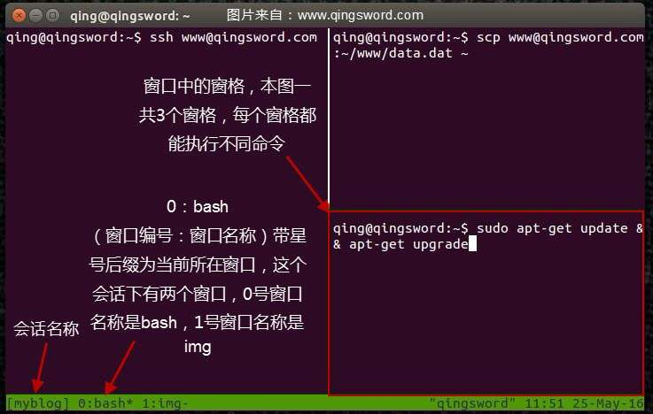

[ubuntu入门手册]-21-使用Tmux终端复用器
引言
这篇文件介绍Linux下非常好用的终端复用器Tmux，经常使用Linux的朋友对终端并不陌生，但有时我们需要同时在终端中完成多个任务的时候，不得不打开多个终端，在图形界面下这种操作并不难，但如果是纯字符界面，就不得不等待一个任务退出再执行下一个任务，这非常托节奏，Tmux能够很好的解决这个问题。
文章目录
0×1.Tmux介绍
Tmux能创建不同的"会话"，每个"会话"代表了一个独立的终端工作区，每个"会话"中能划分多个"窗口"，每个"窗口"又能划分出不同的"窗格"，而每个"窗口"中的"窗格"都是能够独立运行bash命令的区域，他们之间互不干扰，且能并行运行不同的命令。
简而言之，Tmux就是让一个终端能够分割成不同区域，并行执行不同命令的终端复用工具。
下面这张图是运行了Tmux的终端分割不同窗格的示意图，现在只需要有这个印象，本文第二部分会将Tmux最常见的使用方法列举出来供大家参考：
0×2.Tmux常用实例
a.ubuntu中安装tmux
Ubuntu可以使用下面的命令在线安装Tmux：
qing@qingsword.com:~$ sudo apt-get install tmux
b.创建删除会话
首先，创建tmux会话：
#创建一个名称为Session1的新会话，新会话会自动创建一个窗口，窗口名称为调用它的程序的名称，本例是使用bash创建的，窗口0的名称自然就是bash qing@qingsword.com:~$ tmux new -s Session1 #现在就进入tmux的界面了，如果想退出，直接输入"exit"回车后就退出了当前会话，会话也不会在后台运行，如果此时我们在会话中运行了一些命令（比如日志监控命令），想让这个会话在后台运行，只需要按下键盘的[ctrl]+[b]组合键，之后再单独按一下[d]，就能将会话保存到后台运行了，d的意思就是"detached" #将会话保存到后台之后，可以使用下面的命令查看他们 qing@qingsword:~$ tmux ls #这是刚才创建的会话"Session1"，会话中创建了一个窗口"1 windows"（默认创建会话就会创建一个窗口） Session1: 1 windows (created Wed May 25 12:15:08 2016) [80x23] #这是另外一个会话"blog"，是我之前创建的，其中有两个窗口，后面的(attached)代表这个会话在另外一个终端中正在使用，但这并不代表当前终端不能调用它，如果两个终端同时调用了这个会话，那么会话中的命令将在两个终端中同步显示 blog: 2 windows (created Wed May 25 10:24:10 2016) [80x23] (attached) #将会话重新加载到前台，参数-t后面接要加载到前台的会话名称，大家可以尝试着创建多个会话，然后使用这种方法在不同会话之间切换 qing@qingsword:~$ tmux attach -t Session1 #命令简写效果同上 qing@qingsword:~$ tmux a -t Session1 #删除会话，将会话放入后台运行后，如果不需要使用了，可以使用下面的命令删除这个会话 qing@qingsword:~$ tmux kill-session -t Session1 #只剩下一个会话了 qing@qingsword:~$ tmux ls blog: 2 windows (created Wed May 25 10:24:10 2016) [80x23] (attached)
c.在会话中创建窗口
介绍完会话的创建，现在来看看如何在会话中创建多个窗口，每个窗口就像浏览器的不同标签页，我们可以在每个标签页之间切换来执行不同的命令：
#首先重新创建刚才删除的会话 qing@qingsword:~$ tmux new -s Session1
在会话中使用组合键[ctrl]+[b]，之后再单独按一下[c]，注意底部状态栏的变化，是不是在"0:bash"后面多了个"1:bash"？，这说明已经新创建了一个窗口，窗口号是1，名称是bash，如果想改变当前窗口的名称，可以使用组合键[ctrl]+[b]，之后再单独按一下[,]（英文状态下的逗号），输入一个名称回车即可，如果想在不同的窗口切换，可以使用组合键[ctrl]+[b]，之后再单独按一下[0]，就切换到了0号窗口，窗口名称后面带星号（*）的是当前所在窗口，以此类推。
在窗口中没有窗格的情况下，直接输入"exit"回车后就能删除当前窗口，如果窗口下存在窗格，依次在窗格中使用exit退出，成为单窗格的时候，再次exit就删除了当前窗口。
d.在窗口中创建窗格
在窗口中，创建不同窗格的方法也很简单，只需要使用组合键[ctrl]+[b]，之后再单独输入[%]（英文状态下的百分号），就能将当前窗口划分为左右分隔的窗格；而如果使用组合键[ctrl]+[b]，之后再单独输入["]（英文状态下的双引号）就能将当前窗格分隔成上下两个窗格，以此类推。
那么如何在不同窗格之间切换呢？只需要使用组合键[ctrl]+[b]，之后再单独按下键盘的上下左右键，即可在不同窗格之间切换，删除窗格只要在当前窗格输入"exit"回车即可。
上面这些就是Tmux的最基本用法，更多好玩的用法大家可以通过man去查找。